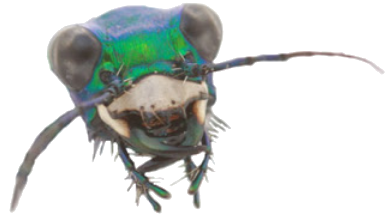

Tema 3. Las extremidades cefálicas

• Maxilas, labio y mandíbulas
• Mandíbulas de artrópodos
• Las antenas
• Apéndices premandibulares
• Apéndices preantenales
Capítulo 7. Apéndices cefálicos (texto)
Presentación. Apéndices cefálicos
Modelo 3D. Apéndices cefálicos
Lecturas complementarias:
• Angelini, D.R. & T.C. Kaufman. 2005. Insect appendages and comparative ontogenetics.
• Rogers et al. 2002. The development and evolution of insect mouthparts as revealed by the expression patterns of gnathocephalic genes.
• Apendices. Revisión bibliográfica por Luis Felipe Cid (2019).